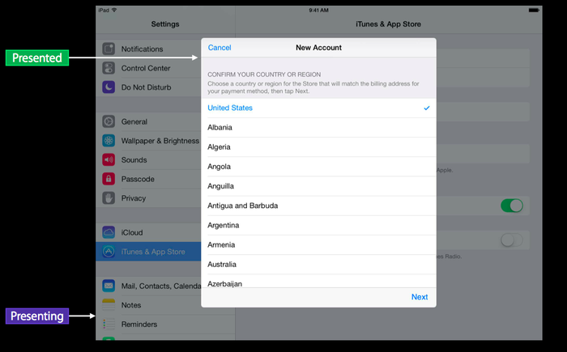

UIPresentationController是在iOS8.0后出现，用来提供高级视图切换功能, 使管理present ViewController的过程变得简单。
重要属性及方法
// presentation(演示)起点的ViewController(只读属性)
public var presentingViewController: UIViewController { get }
// 要展示的ViewController(只读属性)
public var presentedViewController: UIViewController { get }
// 演示风格
public var presentationStyle: UIModalPresentationStyle { get }
// presented和presenting ViewController的祖先视图。
public var containerView: UIView? { get }
/* presentation过程中的动画视图，必须是presentedViewController.view的祖先视图，或者是
presentedViewController.view本身.(默认值：presentedViewController.view本身)*/
public func presentedView() -> UIView?
// 展示动画开始时调用
public func presentationTransitionWillBegin()
// 展示动画结束后调用
public func presentationTransitionDidEnd(completed: Bool)
// 消失动画开始时调用
public func dismissalTransitionWillBegin()
// 消失动画结束时调用
public func dismissalTransitionDidEnd(completed: Bool)
在iPad的设置页面，可以通过popOver弹出一个UIViewController，这个弹出的可以和用户交互的Controller叫做PresentedViewController，而后面那个被部分遮挡的UIViewController叫做PresentingViewController。
如图：
